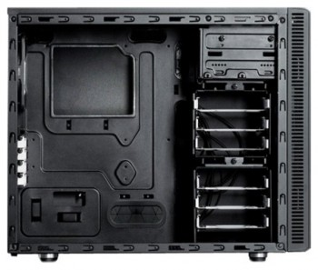
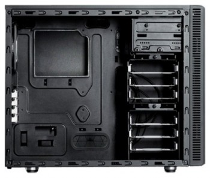

 
Корпус для ПК Fractal Design Define Mini черный без БП mATX 2x120mm Mini-tower. Является качественным корпусом, подходящим для установки материнских плат Micro ATX, топового процессора с хорошим башенным кулером и одной топовой видеокарты.
Корпус Define Mini создан специально для тех, кому требуется гибкая платформа форм-фактора Micro ATX, где всё пространство задействовано максимально эффективно: идеальный баланс объема и функциональности.За счет того, что Define Mini компактнее обычного Micro ATX-корпуса и его внутреннее пространство оптимизировано, корпус становится идеальной основой для конфигурации. Компоновка внутреннего пространства способствует свободному прохождению воздуха вокруг основных компонентов, обеспечивая хорошее охлаждение и тишину работы системы.Широкая поддержка охлаждения (как воздушного, так и жидкостного) обеспечивает создание мощных систем. Обладая чертами серии Define, корпус Define Mini получил характерный дизайн передней панели, плотный звукопоглощающий материал и верхнюю панель с заглушками ModuVent. Те, кому хочется снять ModuVent и установить дополнительные вентиляторы или радиатор, вместо заглушек могут зафиксировать пылевой фильтр с магнитными креплениями, а встроенный кожух для блока питания обеспечивает непревзойденный уровень укладки кабелей. Специальный дизайн Define Mini обеспечивает создание действительно изящной системы, что отличает продукты Fractal Design.
Фронтальные аудио-разъемы: Да;
Форм-фактор материнской платы: mATX;
Наличие блока питания: Отсутствует;
Расположение БП: нижнее;
Цвет: черный;
Фронтальные разъемы USB 3.0: 1;
Тип корпуса: Mini-Tower;
Отсеки 3,5" внутренние: 6;
Количество слотов расширения: 5;
Размещение HDD: поперечное;
Вентиляторы на передней панели: 1;
Размер фронтальных вентиляторов: 120мм;
Вентиляторы на задней панели: 1;
Размер тыловых вентиляторов: 120мм;
Число доп. вентиляторов 120мм: 2;
Материал корпуса: сталь;
Максимальная длина видеокарты: 260;
Размеры корпуса: 210x395x490мм;
Вес корпуса: 9.50;
Гарантия (мес): 24;
Бренд: FRACTAL DESIGN;
Фронтальные разъемы USB 2.0: 2;
Отсеки 5,25" внешние: 2;
Фронтальная откидная панель ("дверь"): Да;
Блок управления вентиляторами: Да;
Толщина стенок корпуса: 0.8;